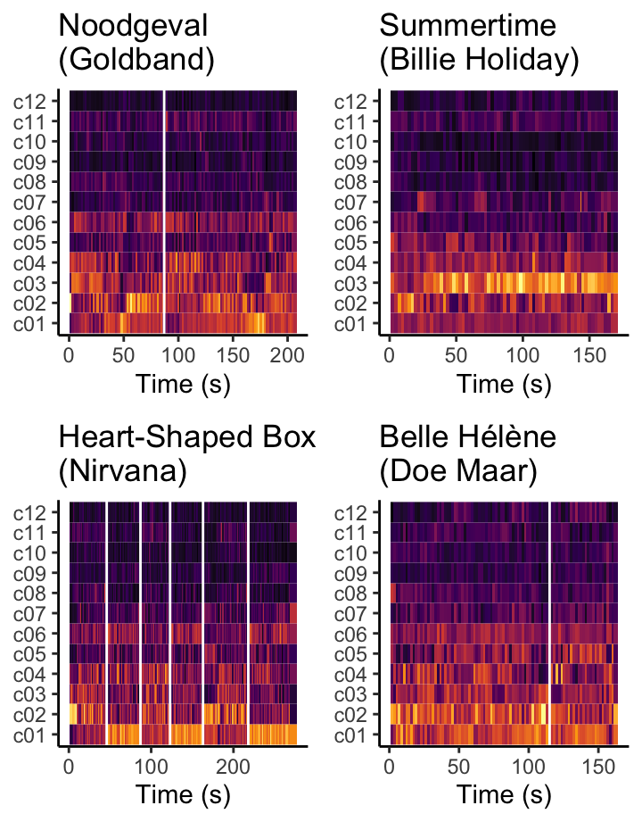
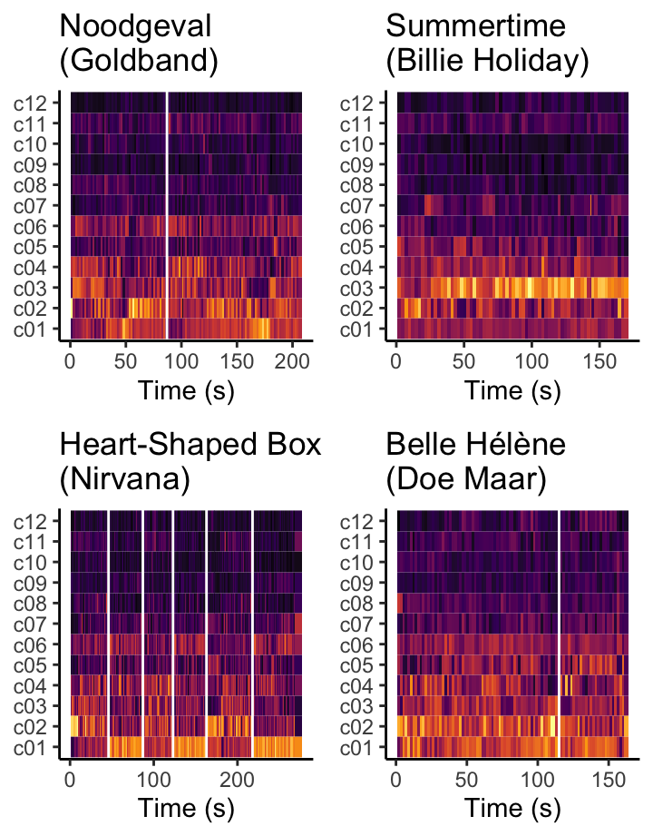
 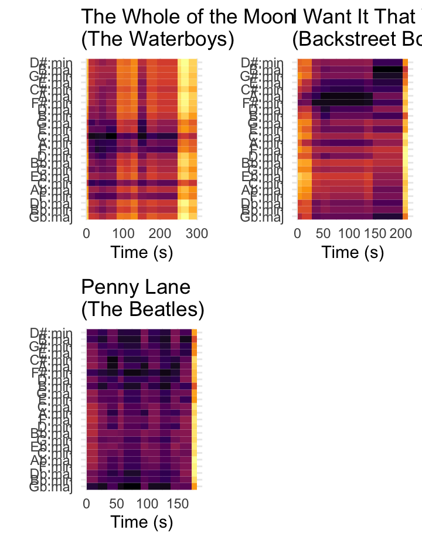
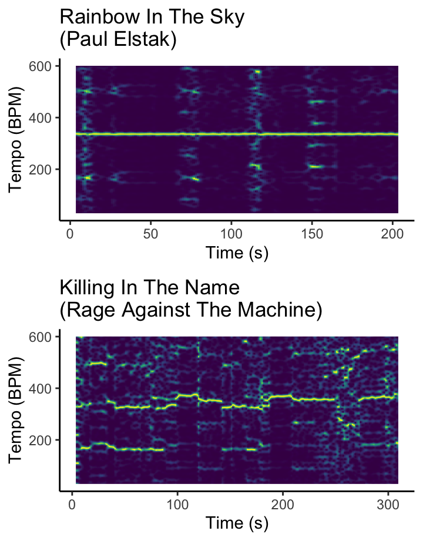
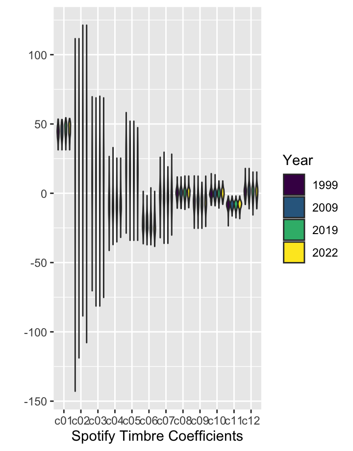
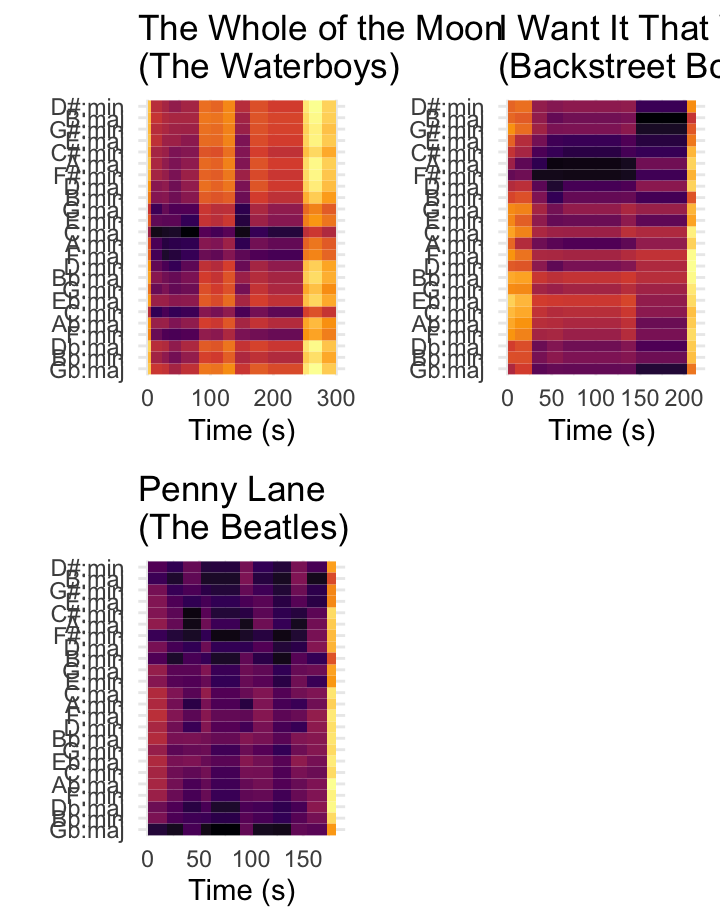
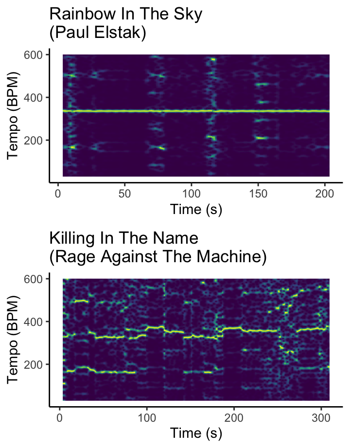
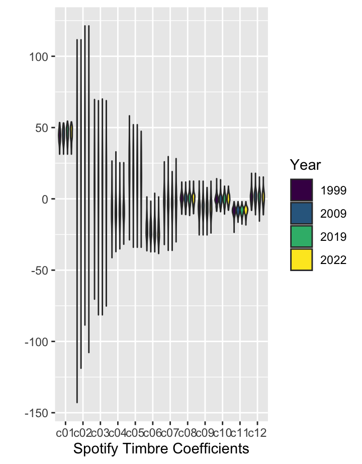

 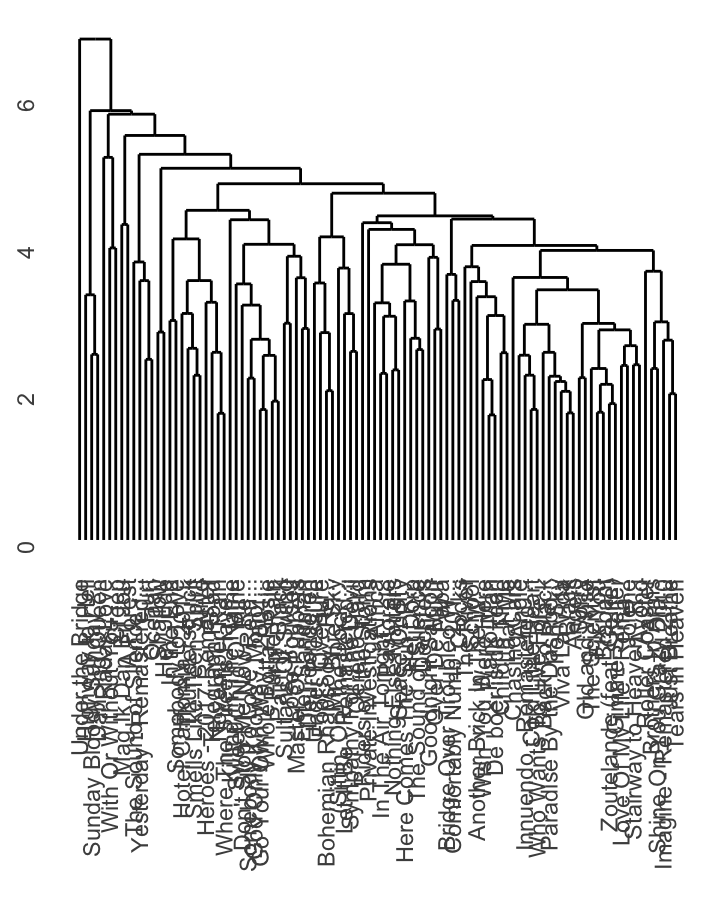
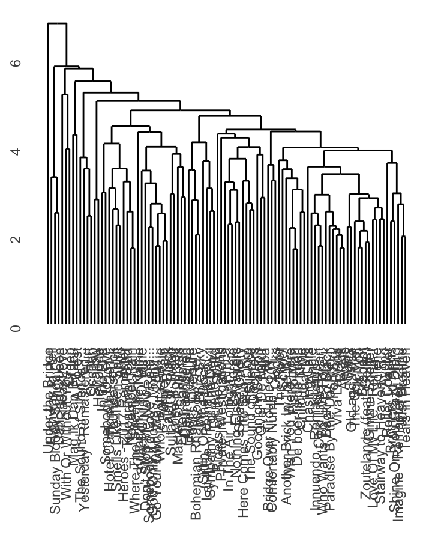
What is the TOP2000?
Column
What is the TOP2000?
The list of lists
The TOP2000 is a Dutch radio programme by radio station NPO radio 2. From Christmas Day until midnight of New Years Eve, a list of 2000 songs that are considered the most popular songs of all time, is broadcasted. The list, constructed by votes from the audience, was first on air in 1999 to celebrate the new millennium. Due to the success of the show, the radio station decided to make it an annual programme. In the following years, the TOP2000 grew out to become a yearly tradition for many households.
The list of 2000 songs has changed over the years with new songs entering the TOP2000 and other songs not making it to the final cut. New generations of kids grew up listening to the show with their parents and are voting on their favourite songs now too. More recent hits are making it to the list every year (see statistics here) and most likely making the list conform to its time. What exactly are the differences between the list throughout the years and has the sound of the TOP2000 changed over the past 23 years?
The TOP2000 of 1999, 2009, 2019 and 2022
The corpus consists of four playlists: the TOP2000 list from 1999, 2009, 2019 and 2022. The 2000 songs that should be included can be found on the NPO radio 2 website. I am using two already existing playlists on Spotify that I have checked on accuracy, the other two playlists I have created myself. Even though the playlists are carefully constructed, there are a few songs missing. This is not the fault of the creator, Spotify simply doesnt have the songs in its library. This results in the list from 1999 containing a total of 1976 songs, 2009 has 1982 songs, the list from 2019 contains 1993 songs and 2022 has the most with 1999 songs. The amount of songs missing is limited and should therefore not cause too many problems for the data analysis.
An example of a song that is remarkable in the TOP2000 is Danny Veras Roller Coaster. The song entered the list in 2019, immediately making it to the 4th place. Ever since it has been in the top 3 which has not happened with other songs before. If we look at the TOP2000 of 1999 it is interesting to see that Avond by Boudewijn de Groot was only placed at 428. The song has grown in popularity because it now has positioned itself on the 8th place. I expect that newly released songs like Roller Coaster and songs gaining a lot more popularity over time like for example Avond have changed the general sound of the TOP2000 over its years.
Column
Column
Visualisations
Every year looks the same?!
In this scatter plot you can see the relation between valence, danceability and mode in the TOP2000.
The features
The feature mode is quite straight forward: does the song sound more major or minor? Valence and danceability, however, are terms that might need more explanation. Valence tells us something about how happy or sad a song sounds. This means that tracks with a high valence (closer to 1) sound happier or more euphoric and tracks with a low valence (closer to 0) sound sadder, angrier or more depressed. Danceability tells us how suitable a track is for dancing. Again, a value closer to 1 means that you can show your best dance moves while a value closer to 0 means that you are probably standing still. Unfortunately, Spotify is very vague about how exactly these features are measured. According to their website for developers danceability is based on elements like tempo, rhythm stability, beat strength and overall regularity. How valence is estimated, is even more unknown as nothing, not a single musical element, is mentioned here.
4 years TOP2000
The general trend in the four years seems very comparable, the dots show a slight diagonal line. Overall you can probably say that the lower the valence, the less danceable the song and the higher the valence the more danceable the song.
How pitch makes Bohemian Rhapsody number 1: chromagrams

What is a chromagram?
A chromagram shows chroma, or pitch class profiles over time. A high magnitude (light blue) means that there is a lot of that pitch class present at a certain time. On the contrary a low magnitude (dark blue) means that a pitch class is not detectable at that certain time.
The number 1: Bohemian Rhapsody
Lets first take a look at Bohemian Rhapsody by Queen. This is definitely an interesting song in the TOP2000 because of its position in the list. From the first year onwards it has been on number 1 for almost all years. In 2005, 2010, 2014, 2015 and 2020 the song was beaten by either Avond, Hotel California, Imagine or Roller Coaster, however Bohemian Rhapsody still secured a runner up position.
What makes the song so great? If we look at pitch class in the form of the chromagram we can perhaps see why. The song is in three different keys. It starts in the key of Bb in the verse, which becomes very clear by the light blue stripes in the chromagram. Another important moment in the song is the so-called opera-part. This happens around 3 minutes, (or 180 seconds) and is visible in the chromagram if you look at the greener area in the key of A. The greener area in A can be explained because this part is starting in A-major and the part modulates back and forth to this key. The song ends in the key of Eb, hence the light blue area around 330s. In general, you could say this song is all over the place pitch-wise because it is changing key often (I have only outlined the big changes, a lot more is happening!).
The rising star of the last decade: Fix You
Queen is not the only band in the TOP2000 that has had a big impact on the list. Coldplay has turned out to also be a favourite over the past few years. Their song Fix You ended at the 5th place in the edition of 2022. The chromagram separately shows the chords that are being played at the start. The song begins with an organ that plays Eb Gm Cm7 Gb, as is also shown in the chromagram. From around 150 seconds these individually played chords fade away and make way for other patterns with a high magnitude at Eb, the key of the song.
The French chanson: Ne Me Quitte Pas
The French chansons in the TOP2000 are popular. The previous host of the yearly TV show TOP2000 Go-GO, Matthijs van Nieuwkerk is a big fan and has often promoted the genre. The chromagram for Ne Me Quitte Pas is interesting because there is more happening compared to Fix You but not as much as in Bohemian Rhapsody. I believe this is mainly due to the piano that doesnt play clear chords. Instead the piano melody is unpredictable and walks through the songs taking new routes every time while circling around the Ab minor that the song is in.
The dead still singing: Ramses Shaffy
In 2009 the Dutch chanson singer Ramses Shaffy passed away on the 1st of December. His passing had a huge influence on 2009s edition of the TOP2000 because a lot of his songs ended up a lot higher than they were in the previous years. What about the pitch of his music? Zing Vecht Huil Bid Lach Werk en Bewonder shows a high magnitude for both the pitch A and D. This can be explained by the key of the song, which is D major. A is the dominant of the tonic D and therefore the second most important note in this piece.
Positions in TOP2000
Bohemian Rhapsody: 1999: no. 1, 2009: no. 1, 2019: no. 1, 2022: no. 1
Ne Me Quitte Pas: 1999: no. 66, 2009: no. 94, 2019: no. 415, 2022: no. 244
Fix You: 1999: -, 2009: no. 1494, 2019: no. 8, 2022: no. 5
Zing Vecht Huil Bid Lach Werk en Bewonder: 1999: no. 297, 2009: no. 7, 2019: no. 167, 2022: no. 319
Cepstrograms: Who Wants to Live Forever might be the saddest song in the TOP2000
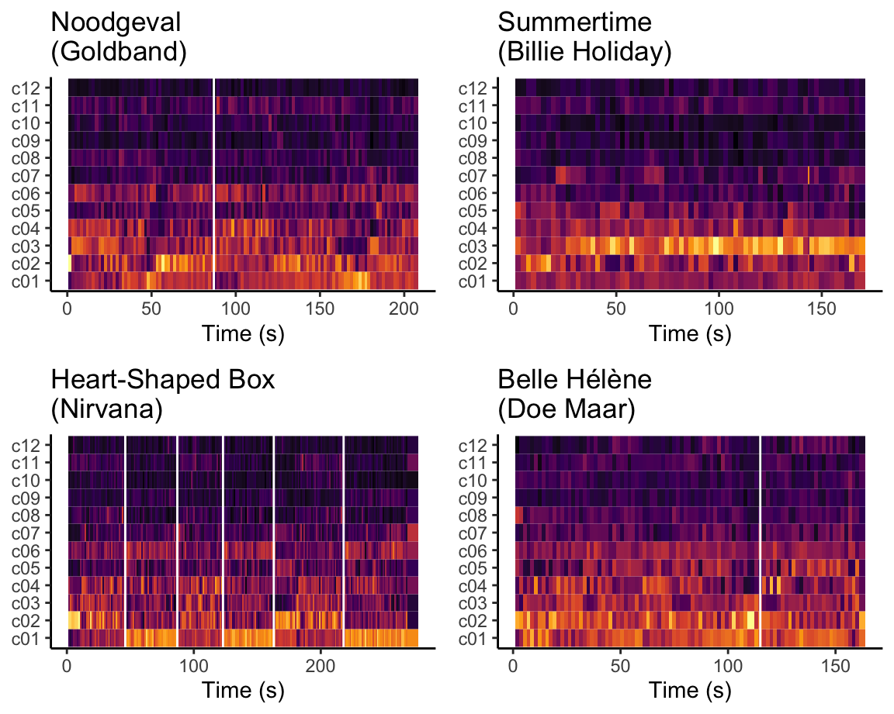
What is a cepstrogram?
A cepstrogram is a diagram that is based on timbre. Timbre is sometimes referred to as sound color, texture or quality. The cepstrogram shows the magnitude of all timbre vectors over time. These timbre vectors are certain qualities, c01 represents the average loudness and c02 the brightness. These vectors get very complex and for most of them it is very hard to grasp what they actually stand for.
Highest new entrant: Noodgeval
Noodgeval by Goldband was the highest new entrant in the 2022 edition. The red line indicates the change from the chorus to the second verse. Here you can see a drop in magnitude for c01 and an increase for c04. The drop can be explained by listening to the synths and the different voices. Both dont continue into the second verse, it is only the beat and one of the guys singing here which makes it sound more chilled. c04 stands for the attack of a sound. At the red line, right before the second verse kicks in, the beat fades away and comes in again with the start of the verse.
Perhaps the oldest song in the TOP2000: Summertime
Summertime is a song written by George Gershwin. Billie Holiday is the first one to record the song in 1935. That makes this song one of the oldest ever to appear in the TOP2000. Can timbre show the age of the song? I would argue yes, based on these four songs at least. If you look at these four cepstrograms you can notice something remarkable for Summertime. It is the only song that has a constant high magnitude for c03. This timbre vector stands for the flatness of the sound. If this quality of flatness is something typical for more older songs is of course something that would need to be properly researched.
A grunge classic: Heart-Shaped Box
Nirvana is grunge and grunge is Nirvana. Their songs only ended up in the TOP2000 in the 10s, about 20 years after they had been active as a band. The cepstrogram for Nirvanas Heart-Shaped Box is interesting because it clearly shows different parts of the song in the c01 and c02 vector. The red lines indicate where different parts start. The parts with a high magnitude for loudness, c01, are the choruses and the remaining parts the verses.
One of the happiest songs in the 2022 edition: Belle Hlne
Sadly, Henny Vrienten, the lead singer and bass player of Doe Maar passed away in 2022. This led to their songs gaining a lot of places in the most recent edition. If we look at the values for valence in 2022, then Belle Hlne is in the top 5 happiest songs of the 2022 edition. Is this also visible if we look at the cepstrogram? The magnitudes are relatively constant throughout the song, with a peak
Positions in TOP2000
Noodgeval: 1999:-, 2009: -, 2019: -, 2022: no. 55
Summertime: 1999: no. 562, 2009: no. 1293, 2019: -, 2022: -
Heart-Shaped Box: 1999: -, 2009: -, 2019: no. 1019, 2022: no. 797
Belle Hlne: 1999: -, 2009: no. 1165, 2019: no. 928, 2022: no. 516
How is one of the saddest songs in the TOP2000 structured: Self-similarity Matrices
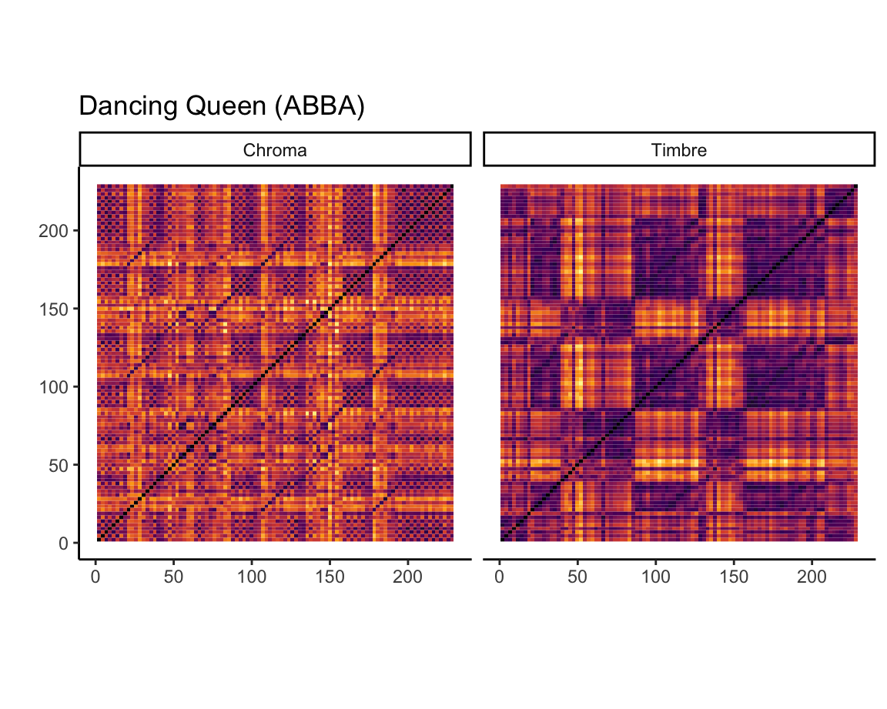
Self-similarity matrices
A self-similarity matrix can explain the structure of the song. These matrices can be either based on chroma (pitch class) or timbre.
Saddest song in the TOP2000: Who Wants to Live Forever
The self-similarity matrices explain the structure of the song. In both matrices there are some clear distinctions visible between parts of the song. For example around 85 seconds, the moment when the chorus starts, there is a sharp change in both matrices.
Everyones favourite Eurovision band: ABBA
This is a self-similarity matrix based on ABBAs song Dancing Queen. Both the chroma and timbre matrix show clearly that Dancing Queen consists of several parts with similar structures. The song starts with an intro that evolves into a part of the chorus. After this, from 43 seconds the first verse starts. In the timbre matrix this is the second purple square that follows the diagonal. The third purple box that starts at around 85 seconds indicates the start of the chorus. The chorus is followed by a shorter second verse, another chorus and an outro. The chroma matrix tells us that the song can be cut into even smaller sections, the chorus can for example be divided into two parts.
Positions in TOP2000
Who Wants To Live Forever: 1999: no. 30, 2009: no. 77, 2019: no. 74, 2022: no. 101
Dancing Queen: 1999: no. 16, 2009: no. 70, 2019: no. 68, 2022: no. 44
Key-changes are exciting! Keygrams

What is a keygram? lsjdlfksd
Penny Lane
The keygram is shown for Hey Jude by the Beatles. According to the keygram the key of the song changes a few times. it looks like the song starts with a short intro in A-minor and then moves to the key of F-major. After this there are two quick changes, the first of which is to Bb-minor or Bb-major. The keygram shows the same magnitude for these keys but it would make more sense that its Bb-major because this key is closer related to the previous keys. After this the key goes back to F-major and then to the dominant of F, the C-major. The remaining part of the song the key changes between these two keys, the F-major and the C-major. Even though most of the key changes arent that surprising, the fact that there are several changes makes it interesting to listen to.
Paranoid Android
This song indeed makes me Paranoid, but in a good way!
Invisible Touch
sldfjsk
I Want It That Way
sdlfkjsldkf
Positions in TOP2000
Penny Lane: 1999: no. 266, 2009: no. 324, 2019: no. 377, 2022: no. 563
Paranoid Android: 1999: -, 2009: -, 2019: no. 342, 2022: no. 423
Invisible Touch: 1999: -, 2009: no. 1738, 2019: no. 1982, 2022: no. 130
I Want It That Way: 1999: -, 2009: no. 1569, 2019: no. 1014, 2022: no. 910
Tempograms: Rainbow in the Sky and Killing in the Name
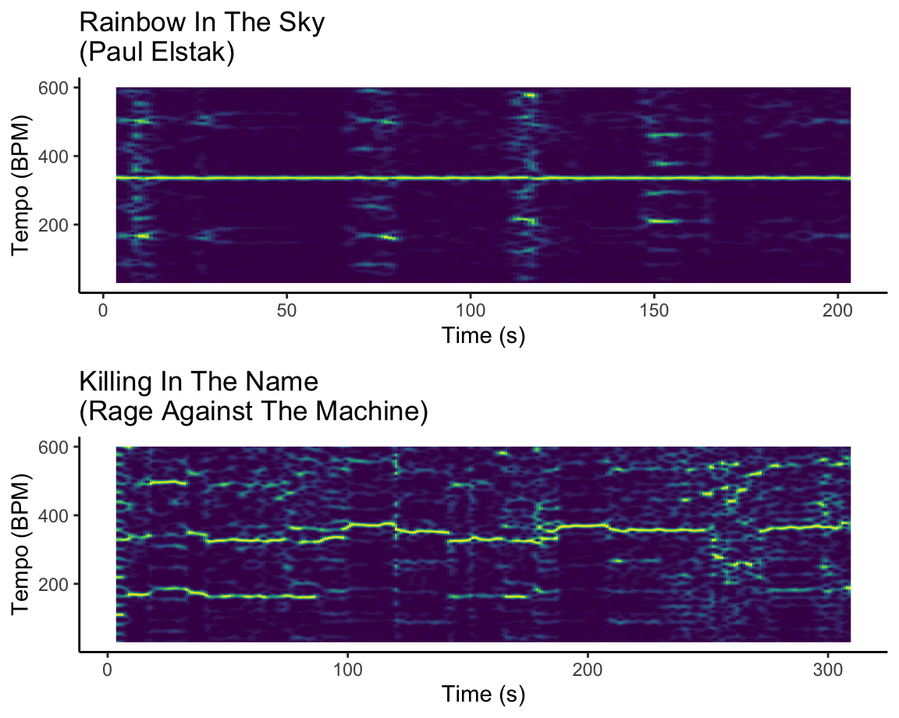
What is a tempogram?
A tempogram shows the BPM of a song over time. In this case the yellow lines show the BPM at a certain point in the song. Sometimes there is more than one yellow line visible, these extra lines are tempo octaves.
The tempogram of Rainbow in the Sky
Rainbow in the Sky was released in 1995 but only entered the TOP2000 in 2015 at no. 765. Since, the song has been gaining a few places each year. Last edition, in 2022, the song ended up at the highest position yet, no. 366.
This is a tempogram of Rainbow in the Sky by DJ Paul Elstak. The tempogram shows a straight line throughtout the entire song around 360 BPM. At around 10 seconds and 75 seconds there are other yellow dots visible for 180 BPM, these are the tempo octaves. At 120 and 150 seconds there are also extra short yellow lines in the tempogram. I personally dont have a good explanation for these lines that appear around 210 BPM. Rainbow in the Sky is an electronic track in the genre of happy hardcore. This explains the straight line in the tempogram, the electronically created beats happen in a very steady pace.
The tempogram of Killing in the Name
Just like Rainbow in the Sky, Killing in the Name was released (in 1992) many years before its introduction to the TOP2000 in 2011. Although the song entered at a relatively low position (no. 1454), the song has kept a steady position in the years following: ranging between no. 94 and no. 48.
The tempogram of Killing in the Name by the band Rage Against the Machine looks very different compared to Rainbow in the Skys tempogram. In this tempogram there is no straight yellow line. This means a few things. Firstly, Killing in the Name isnt an electronic track like Rainbow in the Sky. This means that the drummer needs to keep the exact same pace for some time, which can be hard. That makes the tempo in Killing in the Name automatically more dynamic and the yellow lines not as straight. A second reason for the bumpy lines could be the noise in the song. Everything in the song comes across as loud, the singing (or one could say almost screaming) and the lead guitar that has several solos for example. These parts dont have a very clear on beat tempo which might interfere with the tempo of the drums. The final reason for why there isnt a straight line, are the tempo changes. These changes are quite obvious when you listen to the song. A clear example of one of these changes is at 2 min. 25 (145 seconds). The song switches here from the chorus to the second verse. The chorus has strong vocals and a heavy guitar with a slightly faster beat than the verse which has the characteristic guitar riff with softer vocals.
Positions in TOP2000
Rainbow in the Sky: 1999: -, 2009: -, 2019: no. 386, 2022: no. 366
Killing In The Name: 1999: -, 2009: -, 2019: no. 60, 2022: no. 48
Timbre in the Top 2000
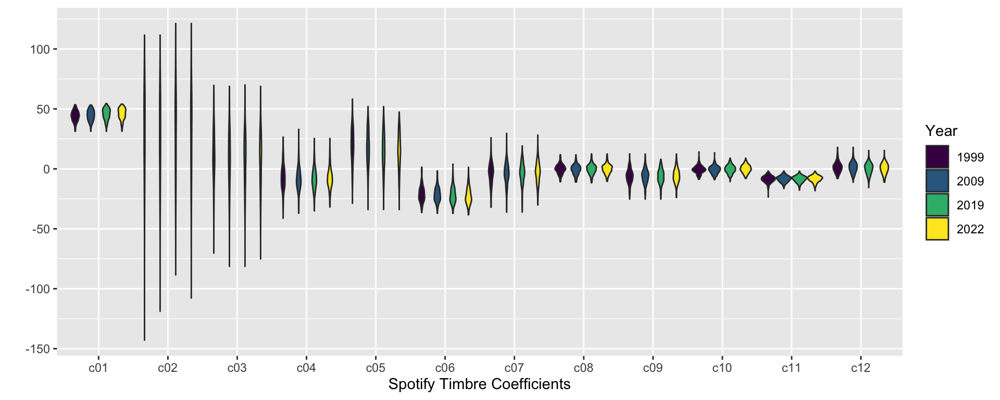
This plot shows the timbre values from 3 years of the TOP 2000. Only the first 100 songs of the playlists are used for this plot. A few timbre coefficients show differences between the four years. For example c02, c04, c06 and c012. In c06 the year of 2009 stands out, the violin has a much longer shape compared to the other years. The same is true for c12 where 1999 has a longer and different shape than the other years. The violins of 2019 and 2022 are very alike for all of the timbre coefficients. This might be because there are only 3 years in between. It means that the first 100 songs in these playlists sound relatively the same.
Loudness, tempo and duration
The features lskdfjlsdkf
The plot This plot shows the loudness tempo and duration of the first 100 songs in four years in the TOP2000.
Dendrogram TOP2000
Dendrogram blablabla
Dendrogram 2009
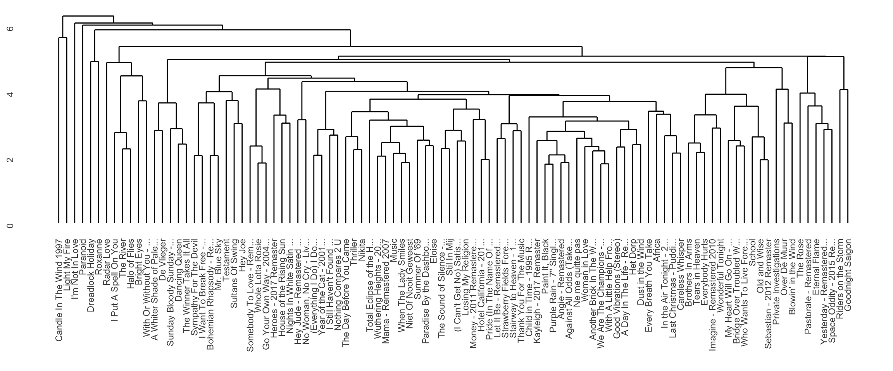
2009: Metallica One weg
Dendrogram 2019
2019: Jeff Buckley Hallulajah weg
2019: One Mary J Blige and U2 weg
2019: Metallica One weg
Dendrogram 2022
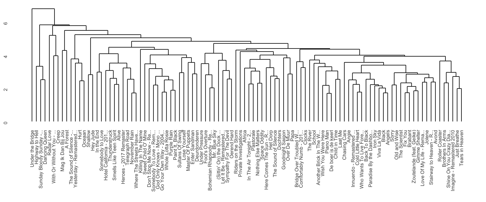
2022: One Mary J Blige and U2 weg
2022: Metallica One weg
2022: The Sound of Silence Disturbed weg
Conclusion
I have analysed a lot of different types of songs from my corpus.